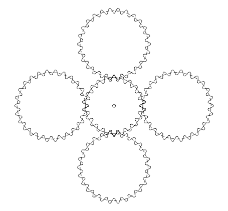

|
|
|


一个齿轮上多个啮合点的强度计算
如何在计算中考虑电机小齿轮上多个同时啮合点？

图 24.2：四重啮合
可使用正常圆柱齿轮副计算（Z12）来解决此问题。
只需将功率除以 4（即降至 25%）
为此，请在 选项卡中点击所需使用寿命旁边的加号按钮，将齿轮1的载荷循环次数从"自动"更改为"每转4个载荷循环"。
English Original
Strength calculation with several meshings on one gear
How can several simultaneous meshing points on a motor pinion be taken into account in the calculation?
Figure 24.2: Fourfold meshing
You can solve this problem with a normal cylindrical gear pair calculation (Z12).
Simply divide the power by a factor of 4 (reduce by 25%)
To do this, click the Plus button beside the requested service life, in the tab, to change the number of load cycles for Gear 1 from "Automatically" to 4 "Load cycles per revolution".